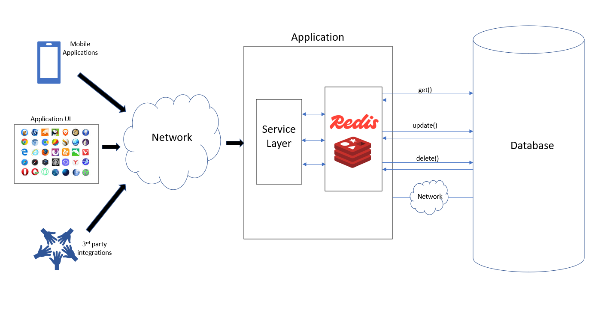

Introduction
Caching is the process of storing copies of frequently accessed data or files in a temporary storage location called a cache, enabling much faster retrieval than accessing the original source. It is a technique used to improve system or application performance by reducing the time and resources needed to fetch data from slower primary storage or remote servers. In practice, when data is requested, the system first checks if the data is present in the cache (a cache hit). If so, it retrieves the data quickly from the cache. Otherwise (a cache miss), it fetches the data from the main source, then stores a copy in the cache for future requests. Caches exist at multiple levels, including hardware (e.g., CPU caches storing frequently used instructions), software (e.g., browsers caching webpage elements like images and scripts), and network layers (e.g., content delivery networks caching web content nearer to users). Key benefits of caching include faster data access, reduced latency, decreased load on original data sources, and an overall improved user experience. However, caching needs careful management to avoid serving outdated content by employing cache expiration and validation strategies. In summary, caching temporarily stores data copies to speed up data retrieval in computing systems and networks, enhancing performance and efficiency by leveraging faster access to commonly requested information.
Where/When we have to use caching ?
Caching should be used in scenarios where improving performance, reducing latency, and easing load on slower or heavily accessed data sources is critical. Common practical use cases include:
-
Database Acceleration:
When databases cannot meet throughput or latency demands, caching frequently accessed or repetitive data significantly boosts performance by avoiding repeated expensive queries.
-
Query Acceleration:
Caching results of complex queries avoids recomputation and reduces response times for repeated database queries.
-
Web and Mobile Application Acceleration:
For consumer-facing applications that expect high performance and high access volume, caching backend data near the application improves responsiveness and reduces backend load.
-
API Response Caching:
Cache commonly used API calls that generate mostly static or semi-static content to reduce server calls and speed up response times (e.g., product info on e-commerce sites).
-
Caching Static Assets:
Images, scripts, configuration files, and other static content that doesn't change often but is frequently requested are good cache candidates, often cached on servers or user devices for faster access.
-
Session and Personalization Data:
User session info, shopping carts, preferences, and dynamic personalization data are cached to offer fast, transient storage without needing full durability of databases, improving user experience and reducing backend load.
-
Content Delivery Networks (CDNs) for Media:
Media streaming services and content-heavy websites cache large volumes of static or rarely changing content close to users geographically to handle large spikes in demand and reduce load on origin servers.
-
Distributed and Microservices Architectures:
In-memory caches are used for state storage and message passing in stateful microservices to meet throughput requirements and avoid bottlenecks.
-
Use in SaaS Dashboards and Reporting:
Caching aggregated and frequently queried data summaries enhances resilience and maintains responsiveness when backend analytic services slow down under load.
Thus, caching is employed wherever there is frequent, repetitive, or costly data fetching or computation, and a faster, lower-latency, and more scalable solution is needed.
How to use caching in distributed system design?
When using caching in distributed system design, several key principles and strategies ensure optimal performance, scalability, and reliability:
-
Understand Distributed Caching:
It involves spreading cache data across multiple servers (nodes) to handle high traffic and large data volumes, reducing load on the primary database and maintaining high availability even if some nodes fail.
-
Identify What to Cache:
Focus on frequently accessed, read-heavy, and relatively stable (low volatility) data such as product catalogs, user profiles, and session information. Avoid caching highly dynamic or rarely accessed data.
-
Cache-Aside (Lazy Loading):
Application checks cache, on miss loads data from database, puts it in cache. Gives control but increases complexity.
-
Read-Through:
Cache automatically loads data from DB on miss, simplifying app logic.
-
Write-Through:
Writes go to cache and database synchronously, ensuring consistency but higher latency.
-
Write-Back:
Writes go only to cache initially, then asynchronously to DB, improving write latency but risking data loss on failure.
-
Design for Scalability and Fault Tolerance:
- Scale horizontally by adding cache nodes.
- Use replication to maintain copies of cache data across nodes for fault tolerance.
- Implement node management to add/remove nodes dynamically.
-
Ensure Data Consistency:
Use strategies to keep cache and database consistent, especially in write-heavy scenarios. This might include invalidation, expiration policies, or synchronized writes.
-
Implement Eviction Policies:
Set policies like Least Recently Used (LRU) or Time-to-Live (TTL) to automatically remove stale or less useful data, preventing cache overload.
-
Leverage Cache Hierarchies:
Combine local in-memory caches (within application instances) for ultra-low latency with distributed caches that provide shared, scalable caching across services.
-
Balance Load and Partition Data:
Partition (shard) cache data to distribute load evenly among nodes and avoid bottlenecks or hotspots.
-
Estimate Capacity and Bandwidth Needs:
Plan for expected read/write loads, memory requirements per node, and total cache size to meet performance goals.
-
Security and Access Control:
Secure cache access to prevent unauthorized data retrieval or tampering.
Choose Appropriate Caching Strategies:
How to use caching in database connectivity for distributed springboot systems
To use caching effectively in database connectivity within a distributed Spring Boot system, the recommended approach is to implement a distributed cache that all application instances share, ensuring cache synchronization and minimized database load.
Key Steps and Concepts:
-
Use Redis or Similar Distributed Cache:
Redis is widely used with Spring Boot for distributed caching. It acts as a central, fast-access cache store accessible by all instances, avoiding local cache incoherence problems. Spring Boot supports Redis caching natively with the spring-boot-starter-data-redis dependency.
-
Enable Caching in Spring Boot:
Annotate your main Spring Boot application class with @EnableCaching to activate Spring’s cache abstraction.
-
Configure Redis Cache:
Add dependencies:
<dependency> <groupId>org.springframework.boot</groupId> <artifactId>spring-boot-starter-data-redis</artifactId> </dependency> <dependency> <groupId>org.springframework.boot</groupId> <artifactId>spring-boot-starter-cache</artifactId> </dependency>
Configure Redis host, port in application.properties or application.yml:
spring.cache.type=redis spring.redis.host=localhost spring.redis.port=5454
Define CacheManager Bean (Optional if using defaults): You can customize cache TTL, serialization, etc., by defining a RedisCacheManager bean with a RedisCacheConfiguration, e.g., setting entry TTL. Cache Database Results Using Spring Cache Annotations:
Use @Cacheable, @CachePut, and @CacheEvict on your service layer methods that fetch/update data to transparently cache DB results, for example:
@Cacheable(value = "users", key = "#userId") public User getUserById(Long userId) { return userRepository.findById(userId).orElse(null); } -
Handle Cache Synchronization Across Instances:
Since multiple Spring Boot app instances run in distributed environments, Redis ensures all instances share a synchronized cache, reducing redundant DB hits. Advanced implementations use aspects or interceptors (see concepts such as distributed locking or cache-aside patterns) to prevent race conditions and cache stampedes.
-
Evict and Invalidate Cache Appropriately:
On database updates, use @CacheEvict or write-through strategies to keep cache consistent.
-
Consider Two-Level or Hierarchical Caching (Optional):
Local in-memory cache (like Caffeine) for ultra-fast access, backed by Redis distributed cache for sharing across instances, balancing latency and coherence

Please find the github code link : caching-example